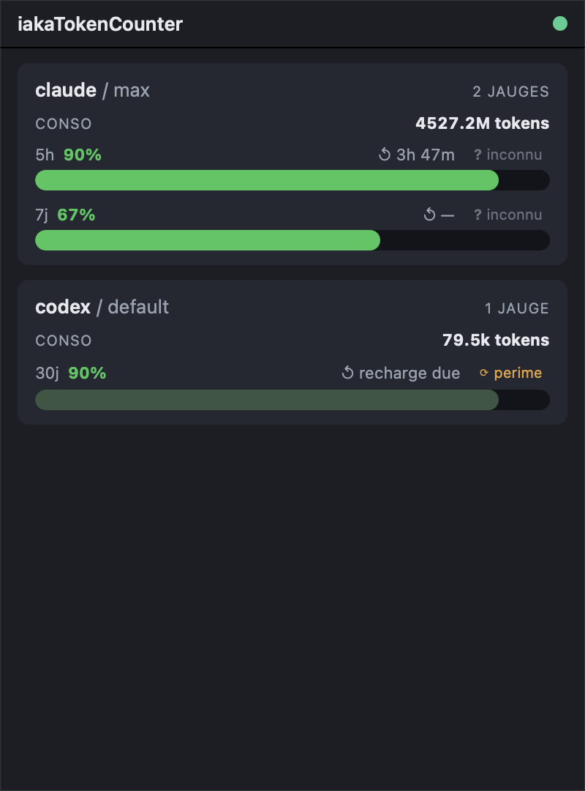

Dépôt : ~/work/iakaTokenCounter (HEAD 7ae1cec, 27/09/2026). Chemins relatifs à la racine du dépôt.

Dépôt : ~/work/iakaTokenCounter (HEAD 7ae1cec, 27/09/2026). Chemins relatifs à la racine du dépôt. Légende : V = VÉRIFIÉ dans le code/la config ; S = SUPPOSÉ (doc ou déduction non prouvée par le code).
Moniteur de consommation IA multi-comptes logé dans la barre système : il affiche une jauge de quota restant par compte (Claude, Codex), calculée à partir des journaux locaux des agents et de la statusline Claude Code, sans API distante (README.md:1-17, CLAUDE.md § « Ce qu'est ce projet »). Il porte son propre bus local : un broker MQTT embarqué (iakahub) sur lequel un démon de mesure publie des « codes » scalaires retenus, que le tray et d'autres logiciels peuvent lire (iakahub/README.md:1-8, specs/contrat-mqtt-conso.md § 0).
Workspace Cargo à 4 membres : iakatc-core, iakatc-daemon, iakahub, src-tauri (Cargo.toml:1-3) V ; front TypeScript/Vite (index.html, analytics.html, src/*.ts) V.
| Processus / binaire | Rôle | Réseau | Réf. |
|---|---|---|---|
App tray iakaTokenCounter (Tauri 2, Rust + webview) | Icône tray, popover, fenêtres analytics ; subscriber MQTT ; lance iakahub en sidecar | client MQTT → 127.0.0.1:1883 | src-tauri/src/lib.rs:23-116 V |
| iakahub (sidecar) | Broker rumqttd in-process + spawn/supervision du démon | écoute 127.0.0.1:1883 TCP, MQTT v4, anonyme | iakahub/src/broker.rs:20-23,79-114, iakahub/rumqttd.toml:1-5,22-24 V |
| iakatc-daemon (enfant d'iakahub) | Tick de mesure (60 s) → publication retenue | client MQTT → 127.0.0.1:1883 | iakatc-daemon/src/main.rs:57-84, iakatc-daemon/src/config.rs:13-16 V |
iakatc-daemon statusline-capture (process court lancé par Claude Code) | Capture rate_limits de la statusline → fichier JSON | aucun | iakatc-daemon/src/main.rs:45-53, iakatc-daemon/src/statusline.rs:17-55 V |
iakatc-core (bibliothèque) | Mesure (parsing JSONL), fusion quota, construction des messages du contrat | — | iakatc-core/src/publish/contract.rs, iakatc-core/src/quota/merge.rs V |
externalBin: ["binaries/iakahub", "binaries/iakatc-daemon"] (src-tauri/tauri.conf.json:41) V. iakahub cherche le démon à côté de son propre exécutable (iakahub/src/supervisor.rs:20,40) V.IAKATC_MQTT_PORT, fail-fast si occupé, pas d'auto-incrément ; code de sortie 2) (iakahub/src/broker.rs:31-37,82-87, iakahub/src/main.rs:25-31) V. Dev front Vite : http://localhost:5173 (src-tauri/tauri.conf.json:8) V. Aucun WebSocket, pas de v5, pas d'auth, pas de TLS (iakahub/rumqttd.toml:1-5) V.MAX_RESTARTS, iakahub/src/supervisor.rs:22), puis broker seul ; arrêt Ctrl-C/SIGTERM → kill du démon (iakahub/src/main.rs:34-71) V. Env injecté au démon : host 127.0.0.1, port, user iakahub / password local factices (iakahub/src/supervisor.rs:48-53) V.RunEvent::Exit → kill du sidecar iakahub (src-tauri/src/lib.rs:107-115) V ; iakahub tue alors le démon [S : le kill Tauri envoie-t-il un signal capté par le handler SIGTERM d'iakahub ? non vérifié].IAKATC_SPAWN_DAEMON=false → pas de sidecar, tray en subscriber pur (src-tauri/src/config.rs:43-46, src-tauri/src/lib.rs:121-125) V.Accessory (pas d'icône Dock ni Cmd-Tab) (src-tauri/src/lib.rs:42-43) V.src-tauri/src/lib.rs:46) → spawn sidecar iakahub (lib.rs:51,126-139) V.rumqttd dans un thread dédié, sonde TCP ≤ 5 s (iakahub/src/broker.rs:79-114), puis spawn + supervision du démon (iakahub/src/main.rs:44-57) V.IAKATC_TICK_SECONDS) (iakatc-daemon/src/config.rs:16,49-52) V :~/.claude/projects/**/*.jsonl (y compris subagents/agent-*.jsonl), mémoïsé par (mtime, taille) (iakatc-core/src/measure/claude.rs:11-12,453-455, iakatc-daemon/src/main.rs:94-98) V ;~/.codex/sessions/**/*.jsonl (CODEX_HOME) + rate-limits (iakatc-core/src/measure/codex.rs:5, iakatc-daemon/src/main.rs:99-104) V ;IAKATC_HOME/config.json et IAKATC_HOME/quota/*.json (défaut ~/.iakatokencounter) (iakatc-core/src/quota/mod.rs:17-30, iakatc-daemon/src/main.rs:107-112) V ;iakatc-daemon/src/main.rs:122-130) V ;contract::tick_messages → lot de messages {topic, payload} → publish_batch retenu QoS 1 avec dédup différentielle (iakatc-daemon/src/main.rs:134-145) V ;PERIODIC_FULL_RESYNC_EVERY_N_TICKS, iakatc-daemon/src/main.rs:43,77-81) et sur chaque ConnAck (iakatc-daemon/src/mqtt.rs:133) V ;émis / publiés / inchangés / perdus sur stderr (iakatc-daemon/src/main.rs:147-159) V ; alerte si un filtre consommateur ≥ 80 topics (main.rs:170-179, iakatc-core/src/publish/contract.rs:36,41) V.iakatc-daemon statusline-capture comme statusLine ; lecture JSON stdin, écriture IAKATC_HOME/quota/claude.<account>.json si rate_limits présent, ligne minimale sur stdout, toujours code 0 (iakatc-daemon/src/statusline.rs:3-55, iakatc-daemon/README.md § « Config statusline ») V. Branchement effectif dans ~/.claude/settings.json : [S, non lu — interdit de toucher ~/.claude].ConnAck aux filtres du contrat, application des publish au store, puis push_state → tooltip + icône recomposée + événement webview tray://state (src-tauri/src/mqtt_sub.rs:21-91) V.app_data_dir (src-tauri/src/quota_history.rs:32-46, src-tauri/src/rollups.rs:32, src-tauri/src/memory.rs:23-35, src-tauri/src/lib.rs:64-93) V.CLI
iakatc-daemon (boucle) ; iakatc-daemon statusline-capture (iakatc-daemon/src/main.rs:45-53) V.iakahub sans argument ; codes de sortie 0 / 2 (broker non démarré) / 3 (handler d'arrêt) (iakahub/src/main.rs:29,39, iakahub/README.md § Codes de sortie) V.npm run tauri dev, npm run build, cargo test, cargo clippy (README.md § Développement) [S : non exécuté].Variables d'environnement (communes tray + démon) : IAKATC_MQTT_HOST (déf. 127.0.0.1), IAKATC_MQTT_PORT (1883), IAKATC_MQTT_USER/PASSWORD (repli MOSQUITTO_*), IAKATC_MQTT_ROOT (iakatokencounter), IAKATC_MQTT_CLIENT_ID (déf. iakatc-daemon-<host> / iakatc-tray-<host>) (iakatc-daemon/src/config.rs:38-53, src-tauri/src/config.rs:33-46) V. Démon seul : IAKATC_TICK_SECONDS, IAKATC_ACCOUNT_LABEL (déf. default), IAKATC_HOME, CODEX_HOME (iakatc-daemon/src/config.rs:49-53, iakatc-core/src/quota/mod.rs:19-21) V. Tray seul : IAKATC_SPAWN_DAEMON V. iakahub : IAKATC_MQTT_PORT, RUST_LOG (iakahub/src/broker.rs:31, iakahub/src/main.rs:75-81) V.
Endpoints HTTP : aucun servi par ce dépôt [V par absence dans src-tauri/src, iakahub/src, iakatc-daemon/src]. Note : l'instruction portefeuille mentionne un endpoint http://127.0.0.1:4646/quota « à créer » (~/work/.portefeuille/specs/instructions/accueil-widgets.md:83) — n'existe pas dans iakaTokenCounter V.
IPC Tauri (commandes invoke) enregistrées src-tauri/src/lib.rs:30-37 V :
| Commande | Rôle | Réf. |
|---|---|---|
get_reservoirs | instantané d'état (réservoirs, pire compte, broker/daemon) | src-tauri/src/state.rs:272-273 |
open_analytics(provider, account) | rafraîchit les rollups puis ouvre/refocalise la fenêtre analytics-<provider>-<account> | src-tauri/src/state.rs:285-289, src-tauri/src/analytics.rs:9-26 |
get_history(provider) | historique recalculé depuis les JSONL Claude/Codex (top 20) | src-tauri/src/history.rs:22,111-122 |
get_memory_history | échantillons RAM | src-tauri/src/memory.rs:218-219 |
get_quota_history | échantillons de quota | src-tauri/src/quota_history.rs:281-282 |
get_daily_rollups | rollups quotidiens | src-tauri/src/rollups.rs:279-280 |
Événements Tauri : tray://state (src-tauri/src/mqtt_sub.rs:18), tray://memory (src-tauri/src/memory.rs:26) V.
Fichiers lus : ~/.claude/projects//*.jsonl, ~/.codex/sessions//*.jsonl, ~/.iakatokencounter/config.json, ~/.iakatokencounter/quota/*.json [V, réf. ci-dessus]. Fichiers écrits : ~/.iakatokencounter/quota/claude.<account>.json (statusline-capture) ; dans app_data_dir du tray (identifiant com.iakaframe.iakatokencounter, src-tauri/tauri.conf.json:5) : quota-history.jsonl, daily-rollups.jsonl, memory-history.jsonl V. Chemin exact d'app_data_dir sur macOS : S ~/Library/Application Support/com.iakaframe.iakatokencounter/.
rumqttd 0.19), 127.0.0.1:1883, MQTT v4 (3.1.1), anonyme, pas de WS (iakahub/rumqttd.toml, iakahub/src/broker.rs) V. Plafond de rattrapage retenu : 100 topics par filtre pour un abonné QoS ≥ 1 (constante de compilation rumqttd), 200 en QoS 0 (specs/contrat-mqtt-conso.md § 4 encadré, iakahub/rumqttd.toml:9-14,27-33) [V doc + constante RETAINED_FANOUT_CEILING = 100 iakatc-core/src/publish/contract.rs:36].iakatokencounter/ (iakatc-daemon/src/config.rs:8) V.iakatc-daemon/src/mqtt.rs:1,255,266) V. Keep-alive 30 s, canal 1024, inflight 1024, retry borné (50 tentatives, budget 5 s par lot, 10 s pour le resync) (iakatc-daemon/src/mqtt.rs:48-66,108) V.{"v":<scalaire>,"t":<epoch_s>} ; v ∈ number|string|boolean|null, jamais d'objet ; effacement = payload vide retenu (specs/contrat-mqtt-conso.md § 3 ; iakatc-core/src/publish/mod.rs:9-14) V.iakatc-core/src/publish/contract.rs) V :iakatokencounter/all/projets/agents/{project}/{agent}/conso/{input_tokens|output_tokens|cache_tokens|used_tokens}/current (contract.rs:101-112).iakatokencounter/all/ia/agents/{provider}/{agent}/conso/{code}/current (contract.rs:122-133).iakatokencounter/all/ia/{provider}/{account}/quota/{5h|7d|30d}/{used_pct|remaining_pct|used_tokens|resets_at|captured_at|confidence|source}/current (contract.rs:144-151, contrat § 2).iakatokencounter/all/ia/{provider}/{account}/limits/{ceiling_5h_tokens|ceiling_7d_tokens}/current (contract.rs:180-187).iakatokencounter/meta/daemon/{state|last_tick_at|broker_connected|version}/current (contract.rs:202-224).{provider} ∈ claude, codex ; {agent} ∈ coordinator, subagent ; {account} = IAKATC_ACCOUNT_LABEL (contrat § 2 tableau) [V doc].last défini par le contrat mais non publié au MVP (iakatc-daemon/README.md § Limitations) [S : non recoupé ligne à ligne dans contract.rs ; seul {CURRENT} apparaît dans les format!].iakatokencounter/all/ia/+/+/quota/# et iakatokencounter/meta/daemon/#, QoS 1, reposés sur chaque ConnAck (iakatc-core/src/publish/contract.rs:21-24, src-tauri/src/mqtt_sub.rs:35,40-45) V. Réception de meta/daemon/state/current → daemon_available = true (mqtt_sub.rs:67-73) V.subscribe dans iakatc-daemon/src/mqtt.rs, S pour l'exhaustivité].IakaCockpit/src-tauri/src/economy.rs @ 539ea7f et complète codex.rs (iakatc-core/src/measure/claude.rs:4, iakatc-core/src/measure/codex.rs:3) V. Le contrat vise les widgets economy/log du Cockpit comme abonnés (specs/contrat-mqtt-conso.md en-tête) [S : abonnement réel côté Cockpit non vérifié].iakaboxlogs/# vs iakatokencounter/#), le pont CouchDB n'aspire pas les métriques (specs/contrat-mqtt-conso.md § 1, § 7) [V doc]. Depuis iakahub, défaut local ; iakabox atteignable via IAKATC_MQTT_HOST (iakatc-daemon/src/config.rs:9-13) V. Pas de bridge vers iakabox (iakahub/README.md § Hors scope) [V doc].agnostique-mqtt.md:37,93 recense iakatokencounter/# comme arbre existant sur le broker et garantit un arbre disjoint [V dans ce dépôt tiers] → il partage le broker iakahub S.~/.iakatokencounter/quota/*.json (~/work/.portefeuille/specs/instructions/accueil-widgets.md:83,413) [V dans ce dépôt tiers].~/work/iakaHub) : processus distinct actuellement lancé (node ~/work/iakaHub/src/index.js, pid 1123) — homonyme de iakahub (crate Rust de ce dépôt) [V par ps]. Aucune référence croisée trouvée dans le code d'iakaTokenCounter V. Au moment de la lecture, rien n'écoute sur 1883 (lsof) : l'app tray n'était pas lancée V.com.iakaframe.iakatokencounter V ; aucune dépendance d'exécution V.src-tauri/src/tray.rs:62-79, src-tauri/src/icon.rs:85-93,175,301) V. Tooltip : <compte> : NN % restant (+ « — broker deconnecte ») (tray.rs:50-60) V. Clic gauche = ouvrir/masquer la popover ; clic droit = menu « Ouvrir » / « Quitter » (tray.rs:15-39) V.popover, 400×540, sans décorations, toujours devant, masquée à la fermeture) (src-tauri/tauri.conf.json:13-25, src-tauri/src/lib.rs:96-104) V — zones :#conn-dot (index.html header) V ;#banners : « Broker deconnecte — valeurs possiblement perimees » (erreur), « Daemon indisponible — mode subscriber pur » (avertissement) (src/render.ts:263-270) V ;#reservoirs : en-tête provider / account + nombre de jauges ou « conso seule », ligne « conso NNN tokens », une jauge par fenêtre 5h / 7j / 30j avec compte à rebours ↺ de recharge et badge de confiance (ou « perime »), empty-state « pas de jauge de quota disponible » ; double-clic sur une carte = analytics (src/render.ts:150-245) V.analytics-<provider>-<account>, 920×680, titre « Analytics — provider / account ») (src-tauri/src/analytics.rs:9-26) V — zones : titre « Historique » + horodatage de mise à jour + bouton Rafraichir ; ligne de périmètre/révision ; section « Quota courant du compte » ; historique par provider ; section « Memoire systeme (RAM) » (analytics.html, src/analytics.ts:37-132) V.iakatc-daemon/README.md donne IAKATC_MQTT_HOST par défaut 192.168.2.11 et parle du « broker Mosquitto d'iakalogs », alors que le code est à 127.0.0.1 (iakatc-daemon/src/config.rs:13) V. De même CLAUDE.md du dépôt (backlog tokenizer/CLI itc count, remote Forgejo 192.168.2.11) et le README racine qui présente iakahub comme « connecteur optionnel vers le hub iaka » alors que c'est le broker embarqué V.capabilities/default.json:8-11 n'autorise que le sidecar binaries/iakatc-daemon, alors que le code spawne iakahub (src-tauri/src/lib.rs:126) V ; le spawn côté Rust n'est probablement pas soumis à l'ACL S.IAKATC_MQTT_CLIENT_ID est posé, tray et démon prennent le même identifiant (src-tauri/src/config.rs:41, iakatc-daemon/src/config.rs:47) → déconnexions croisées [S sur l'effet, V sur le code].specs/contrat-mqtt-conso.md § 4) ; seul le resync toutes les 10 min répare un abonné tronqué [V doc + main.rs:28-43]. Tout nouvel abonné large (iakatokencounter/#, IakaAgentsMonitor…) est tronqué d'emblée (227 topics par tick mesurés, specs/etat-des-lieux.md) [V doc].iakatokencounter/# [V config, S sur le risque].lib.rs:107-115]. Conflit de port possible avec un autre broker sur 1883 (fail-fast, pas d'auto-incrément) V.~/work/iakaHub) : à lever dans la doc ; rôle réseau d'iakaHub Node non examiné ici S..../last non publié, quota Codex best-effort, used_tokens de quota = total provider (pas par compte) (iakatc-daemon/README.md § Limitations) [V doc].